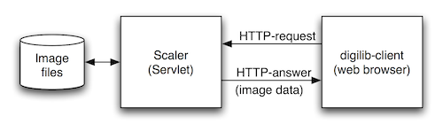
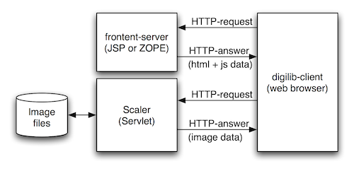

A short introduction to digilib
digilib – how does it work?
The image server digilib is a state-less web-based client-server application for interactive viewing and manipulation of images.
Frontend and Scaler server
digilib consists mainly of two parts, the image server component proper, called “Scaler” and a client-side part that runs in the users web browser.

The users browser sends an HTTP request for a certain (zoomed, scaled, rotated) image to the Scaler server and the server returns the image data as HTTP response.
To complete the schematics of figure 1 we must also take into account that the client-side part consisting of HTML and Javascript code has also been requested and loaded from a frontend-web server into the users browser.

To date there are several frontend implementations for digilib like the current “jquery” version that only requires static HTML and Javascript and the older “greyskin” version (grey buttons, implemented in JSP) that come with the default digilib distribution or the “Zogilib” frontend version implemented in ZOPE.
The frontend-server and the Scaler-server do not have to run on the same machine and often there are several frontends that use the same Scaler server.
Request formats
The format of the HTTP requests for the frontend and the Scaler server can be completely different. The HTML and Javascript code of the frontend just has to generate the correct request for the Scaler to produce the desired image. Most of the current frontend implementations share some or all of the parameters with the Scaler API.
Scaler
The Scaler API is documented on the digilib.sourceforge.net pages. Here is a minimal version:
The Scaler servlet takes parameters in the HTTP request format: Scaler?param1=value1¶m2=value2&... Unknown parameters will be silently ignored.
Recognised parameters:
fnpath to file or directory. All paths are relative to the configured base directory (digilib-config parameterbasedir-list).pnpage number. Index into the (alphabetically sorted) directory given by the path. Starts with 1. Ignored if the path points to a file. Default: 1.dwdestination image width (pixels). If omitted the image is scaled to fitdh.dhdestination image height (pixels). If omitted the image is scaled to fitdw.wxrelative x offset of the image area to be sent (0 <=wx<= 1). Default: 0.wyrelative y offset of the image area to be sent (0 <=wy<= 1). Default: 0.wwrelative width of the image area to be sent (0 <=ww<= 1). Default: 1.whrelative height of the image area to be sent (0 <=wh<= 1). Default: 1.- The image to be loaded can be specified by
fnparameter and the optional indexpn- if
fnpoints to a directory then the file with the indexpn(in alphabetical order according to ASCII) will be loaded - if
fnpoints to a file (with or without extension) then this file will be loaded
- if
The image will be scaled equally in horizontal and vertical direction such that the resulting image does not exceed the rectangle [dw,dh]. If only either height or width is given the image is scaled to match only the given parameter. The size of the resulting image in the other parameter is determined by the aspect ratio of the image.
An example for a Scaler URL is: http://digilib.mpiwg-berlin.mpg.de/digitallibrary/Scaler?fn=experimental/digilib-test/images&wh=0.1712&ww=0.1282&wy=0.1681&wx=0.6895&dw=862&dh=904 such a URL can be used as src attribute to an img element in the frontend HTML.